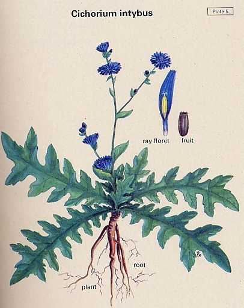

|
ECONOMICALLY
IMPORTANT PLANTS OF INDIA |
| Under-utilized Food and Fodder species and their wild relatives | Contributed by Ms.M.L Annapurna And Dr. Dhanapal, UAS, Bangalore |
Cichorium intybus Linn.
Taxonomic Details

----- Correct Name
----- Classification
----- Synonyms
----- Common Names
Other Biological Details
----- Habit and Habitat
----- Diagnostic Features
----- Reproductive Biology
---------- Breeding System
---------- Phenology
---------- Pollinators
---------- Seed Biology
----------Seed Germination
------ Cultivation
----- Major Pests and Diseases
Economic Potential and Uses
----- Parts Used
----- Uses
----- Harvesting Practices
----- Produce and Products
----- Chemistry
----- Processing Techniques
----- Other uses
----- Economic Potential to the
Country
----- Export Potential
Miscellaneous Information
Literature
HABIT & HABITAT:
An errect perennial herb, 30-90 cm in height, with a fleshy
tap root up to 75 cm in length. It is native to the temperate parts of the Old-world
and is found wild in Punjab and Andhra Pradesh. It is cultivated in Bihar, Punjab,
Himachal Pradesh, Assam; Maharashtra, Gujarat, Tamil Nadu, Kerala. The major
producing countries of chicory a United Kingdom, Belgium, France, Netheriand,
Germany, Switzerland and South Africa. Chicory has been successfully cultivated
in India since 1918 Coimbatore and subsequently in the Nilgiris in Tamil Nadu,
Nadiad, Broach, Amalsad and Jamnagar in Gujrat, Munnar and Vettavoda in Kerala
and in parts of Karnataka, Maharashtra, Himachal Pradesh and Assam.
Availability :
Status :
DIAGNOSTIC
FEATURES
Roots dirty browhish, yellow outside, white Within, bark thin;
leaves broadly oblong', oblanccolate or lanceolate, "crowded at the base
forming a rosette arranged spirally on the stem; upper leavescordate amplexicaul,
lower leaves 7.5-15.0 cm long, pinnatifidy, flowers blue fading to white, in
terminal or homogamous ligulate capitulae 2.5-3.5 cm diam. 4-10 together; achcnes
smooth, 5 angled pale brown to black, 2-3 mm long, crowned with a ring of 0.2mm
long pappus scales.
Breeding System :
Phenology :
Pollinators:
Seed Biology :
Seed Germination:
Cultivation:
Climate-Chicory thrives well under a mild climate.It requires a well
distributed rainfall but can be cultivated under careful irrigation. When raised
for roots,chicory requires a hot and-humid climate and is mostly cultivated
in the southern states; but for raising seed the
crop is grown in regions with a dry temperate climate.The chicory plant needs
chilling for about 90 days to break dormancy from vegetative to reproductive
phase.
Chicory is a hardy plant and can tolerate extreme temperatures during its vegetative
and reproductive phases of growth. For successful seed germination chicory needs
a minimum temperature of 21°, and for good plant growth, a moderate and
uniform temperature with the optimum at 18- 24° .
Chicory seed is commercially produced at altitudes ranging from 2,000 to 3,000
m above sea level in Kalpa Valley. In South India the best roots are produced
at an elevation of 600-1,800 m .
Although chicory plant can tolerate a wide range of precipitation during its
vegetative phase, the distribution of rain and snowfall are controlling factors
in the production of seed. Moderate rainfall and maximum sunshine help vegetative
growth. Chicory seed does not fully develop in areas receiving heavy rains during
July-Aug.; rain also hinders harvesting and curing of the crop.
Soil-The crop does well on light soils, but deep fertile loams with a
slight excess of clay content yields high and good quality roots. When grown
in a compact soil, the crop yields root with a larger proportion oFdry matter
than when grown on lighter sandy soil. Alluvial soils in the hill ranges are
ideal. In the plains, a light or somewhat sandy and moderately rich soil is
recommended for obtaining large, thick and fleshy roots.
Preparation of land-A fallow period of 1.5 tc 3 months after the harvest
of the previous crop is ideal for the chicory crop. The land is then cleaned
and ploughed deep as the tap root penetrates to a depth of 38 cm and more. The
field is made into ridges and furrows with a spacing of 45 cm between the ridges.
A row spacing of 20cm and a plant spacing of 15 cm is maintained for obtaining
a heavy tonnage of root yields
Sowing-The date of planting is one of the most important factors affecting
performance of both chicory steckling and seed crops. The seed for raising stecklings
is sown in June in temperate zones of North India. The steckhngs are ready in
November for storage After overwintering for 3-4 months under -3° to 8°
the stecklings become fit for replanting in Marcn-Aprilfor the seed crop. in
southern states, the seeds (3-5 kg/ha) is sown in Oct.-Nov. and the crop is
ready for coffee blending in March. lf planted early the plants begin to flower
early and tuber formation is very much affected. At Kalpa the ed is sown in
June-July and roots are ready by November. These are left as such under thick
snow and replanted in March. A row to row spacing of 75 cm and plant spacing
of 45 cm is maintained.
Manuring-Farmyard manure of well rotten compost at the rate of 200-25
tonns per hectare ploughed in to the soil to a depth of10-15cm and levelld off,
ensures adequate supply of soil humus for increased crop yields.
Fertilizer application- For the steckling
crop, application of Nitrogen at three levels of 60, 80 and 100 kg/ha in three
splits and for seed crop 80, 120 and 160 kg/ha in three doses is required.
Irrigation-After sowing the whole area is irrigated up to 5cm below the
ridge level. In unirrigated lands the plants are water on alternate days for
the first week. Once the plants are established irrigation can be reduced to
once in 10 days.
Thinning- A fortnight after sowing, when the first leaves appear, a hoeing
cum weeding is given and a fortnight later the plants are thinned out 20-25
cm apart alomg the ridges to maintain a plant population of 60,000-70,000/ha.
In case of seed crop a population of 30,000-35,000 plants/ha may be maintained.
MAJOR PESTS & DISEASES
There are no severe pests or diseases affecting this crop in
India. However, few diseases bound to occur in some places.
Pests:Attarctomorpha cranulata Fabr. attacks chicory and
feeds on the aerial portions, especially the leves, during rains. Pulsia
orichalcea Fabr. catterpillers also eat the leaves causing appreciable damage
to to the crop,
Diseases: A disese called 'pulpy rot' affects the crop in its later
stages. In Punjab 'root rot' is caused by Rhizopus stolonifer Lind. Another
minor disease, leaf-spot, casued by Cercospora chicorii Linn. is also
known to affect the crop. In Tamil Nadu, Chicory was found to be severely affected
by a blight disease caused by Alternaria chicory Nattrass
Parts used
Leaves, Roots
Harvesting Practices
In lighter soils the crop is generally ready for lifting 120-135 days
after sowing, while it may take nearly a fortnight more in heavier soils. After
the crop has attained maturity, it should be lifted as soon as possible. The
roots are lifted with the help of a fork or spade. The tops of the plants are
removed and the roots are washed and cut into small pieces of 1cm thickness.
Seeds-Chicory plants continues to flower for a long time. So it is most im portant
to determine its appropriate harvesting stage and curing. Usually the seed crop
matures in August, which is indicated by the browning of the plant. When the
70-75% capitula are mature on the older branches the whole plant is pulled out,
or the crop is harvested wiht the help of sickles. The harvested crop is piled
on the threshing floor for proper curing. The seed is separated from the dried
crop by beating with wooden sticks.
Yield: About 20 tonnes of wet root per hectare is considered as a good
yield.In Coimbatore, under irrigated conditions, the crop yields about 37.5
tonnes. Exceptional yields of even up to 50 tonnes/ha. can be expected on well
cultivated and manured land.